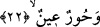
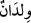
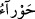
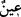
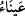
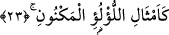
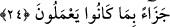

yeniden Allah’ın izni ve kudretiyle canlanır ve uçup gider.
el-Es’iletü’l-mukhıme’de denilmiştir ki: Önceki ayet-i kerîmede “beğendikleri
meyveler” buyrulurken, bu ayet-i kerîmede değişiklik yapılarak “canlarının çektiği kuş
etleri” buyrulmuştur. Bu değişiklik neden yapılmıştır? Çünkü meyveler yemek için
olduğu gibi aynı zamanda göze hitab eden güzel renkleri ve koklanacak güzel kokuları
da vardır. Kuş eti ise bütün kısımları aynı iştahla yenmez, kısımlarına göre iştahlar
değişir.
Yeme ve içmeden sonra insanın yaratılışı gereği cinsel ilişkiden daha çok iştah çekici
bir şey bulunmadığı için devam eden ayette Allah Teâlâ şöyle buyurur:
22. İri gözlü hûriler,
Ayetteki __WORD__ sözü, önceden geçen 17. ayetteki __WORD__ kelimesi üzerine atfedilmiştir.
Veya bu, haberi hazf edilmiş mübtedadır. Yâni “Orada veya onlar için iri gözlü
hanımlar vardır.” Âyette geçen “hûrün înün” kadınlar demektir. Hûr kelimesi, çok beyaz
veya gözlerinin beyazı çok beyaz, siyahı da çok siyah mânâsına olan
(havrâ’)
kelimesinin çoğuludur.
(iyn) kelimesi de iri ve güzel gözlü kadın mânâsına olan
(aynâ’) kelimesinin çoğuludur. Aynü’l-meânî de kaydedildiği gibi hûrîler, meleklerin
tesbihlerinden yaratılmışlardır.
23. Saklı inciler gibi,
Bu cümle, önceki âyet-i kerîmede geçen “hûr” kelimesinin sıfatıdır veya ondan haldir.
Yâni o huriler, gözlerin görmediği, ellerin değmediği saklanmış inciler gibidir,
demektir. Yahut bu, kendisini kirletecek ve zarar verecek şeylerden tertemiz bir yerde
korunmuş inci demektir. Allah Teâlâ müminlerin âhiretteki mükâfâtlarını iyilik, güzellik
ve sâfîlikle nitelendirmeği tekidli bir şekilde beyân buyurunca, bu ifâde aynı zamanda
onların amellerinin de böylece çok değerli olduğunu göstermektedir. Çünkü çekilen cezâ
ve elde edilen mükâfât, yapılan amelin cinsinden olur. Bu sebeple Allah şöyle buyurdu:
24. Yaptıklarına karşılık olarak (verilir).